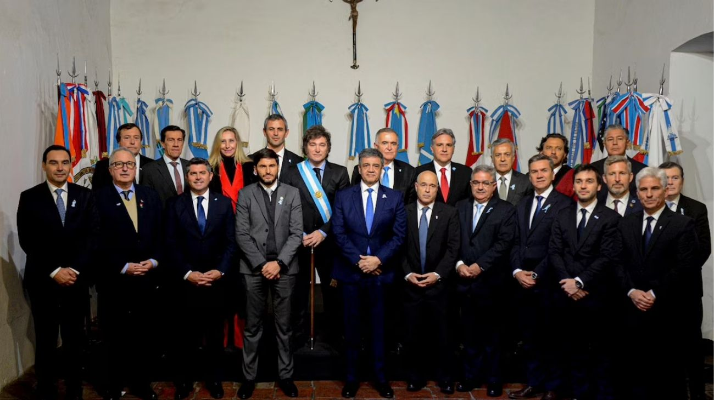

El Gobierno giró $400.000 millones a 12 provincias que no podían pagar sus deudas
El Poder Ejecutivo Nacional firmó el Decreto 219/2026 publicado en el Boletín Oficial, por el cual autoriza un anticipo financiero de hasta $400.000 millones a doce provincias que declararon no poder afrontar sus compromisos presupuestarios más urgentes. Los fondos deberán devolverse dentro del ejercicio fiscal 2026, con una tasa de interés fija del 15% anual.

El Gobierno nacional firmó el Decreto 219/2026 y lo publicó en el Boletín Oficial el 6 de abril de 2026. La medida, suscripta por el presidente Javier Milei junto al Jefe de Gabinete Manuel Adorni y el ministro de Economía Luis Caputo, autoriza un anticipo financiero de hasta $400.000 millones —equivalente a unos 280 millones de dólares al tipo de cambio oficial actual— para doce provincias que manifestaron estar imposibilitadas, de manera transitoria, de hacer frente a sus compromisos más urgentes: pago de sueldos, servicios y amortización de deudas. Las provincias beneficiadas son Catamarca, Chaco, Chubut, Corrientes, La Rioja, Mendoza, Misiones, Río Negro, Salta, Santa Cruz, Tierra del Fuego y Tucumán.
Para entender de qué se trata este mecanismo, vale explicar qué es un anticipo financiero a provincias. Argentina tiene un sistema de coparticipación federal por el cual el Estado nacional recauda impuestos —IVA, Ganancias, entre otros— y luego distribuye una parte de esos fondos a las provincias según una fórmula establecida por ley. Cuando una provincia necesita dinero antes de que llegue su coparticipación del mes, puede pedirle al Gobierno nacional un adelanto de esos fondos. Es decir, el Estado nacional le presta a la provincia contra su propia porción de coparticipación futura, que luego se retiene automáticamente para cancelar la deuda. No es una transferencia gratuita ni un rescate: es un préstamo a cuenta de fondos que la provincia ya tiene asignados por ley.
Las condiciones del decreto son claras. El monto exacto que recibirá cada provincia lo determinará la Secretaría de Hacienda según la capacidad de repago de cada una, calculada en base a su participación en la recaudación de tributos nacionales. Los fondos deben devolverse dentro del ejercicio fiscal 2026, y el anticipo devengará una tasa de interés fija nominal anual del 15%. La devolución se hará automáticamente: la Secretaría de Hacienda quedará autorizada a retener los fondos directamente de la coparticipación que le corresponde a cada provincia, sin necesidad de ningún trámite adicional. Además, el decreto también modifica la tasa de interés de un anticipo anterior otorgado a Entre Ríos en diciembre de 2025, unificándola al 15% anual para dar equidad a todas las jurisdicciones.
La medida revela una tensión que es estructural en la relación entre la Nación y las provincias argentinas. Doce de los veinticuatro distritos del país —la mitad del territorio nacional— reconocieron no poder cubrir sus gastos más urgentes sin un adelanto de fondos del Gobierno central. Esto ocurre en un contexto donde el ajuste fiscal que el Gobierno nacional viene ejecutando desde 2024 también impactó sobre las transferencias a las provincias, muchas de las cuales dependen en gran medida de los fondos coparticipados para financiar sus gastos corrientes, especialmente el pago de salarios estatales. Para el Ejecutivo, el mecanismo es una solución técnica y transitoria que no compromete el equilibrio fiscal nacional; para las provincias, es un salvavidas que les permite llegar a fin de mes mientras acomodan sus propias finanzas.